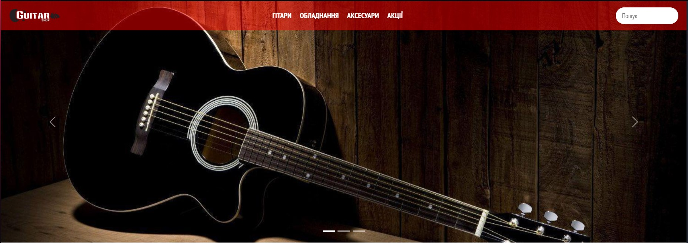
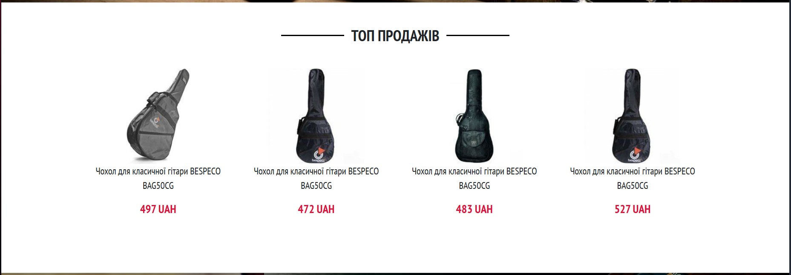

Тема, мета, місце розташування WEB-застосунка та місце звітного HTML-документу
Тема: АДАПТИВНА ВЕРСТКА. МЕДІА-ЗАПИТИ. МЕТАТЕГ VIEWPORT. СТРАТЕГІЯ MOBILE FIRST.
Мета: Адаптивна верстка. Медіа-запити. Медіа-типи. Медіа-функції.Метатег viewport. Інструменти розробника. Стратегія Mobile First.
Завдання
1. У звітному HTML-документі розмістити тему та постановку задачі лабораторної роботи №3.2.
2. Використовуючи медіа-запити та CSS-правила, для вибраних вами брейкпоінтів, виконати адаптивну верстку для:
Десктопної версії
Планшетної версії
Мобільної версії
3. У звітному HTML-документі привести пояснення створення десктопної, планшетної та мобільної версії.
4. В процесі розробки адаптивної верстки, застосувати логічні оператори.
5. Оформлення звітного HTML-документа лабораторної роботи №5 виконати на свій розсуд.
ПК версія
 